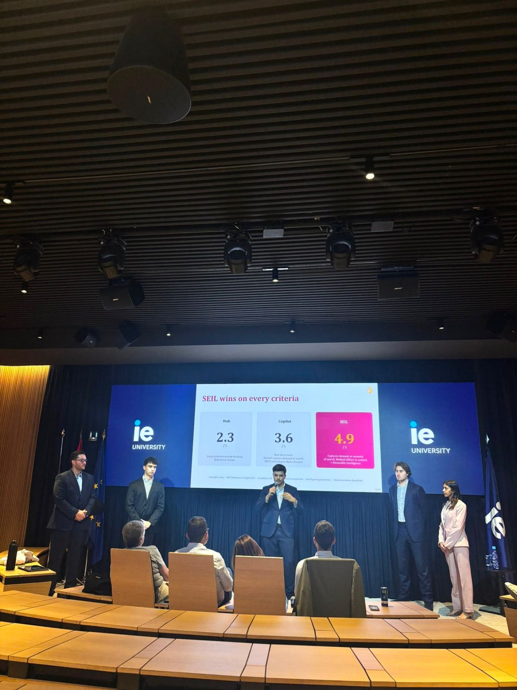
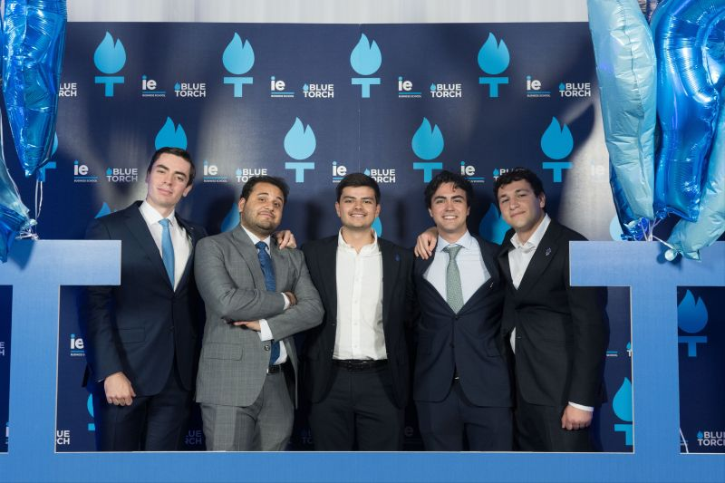
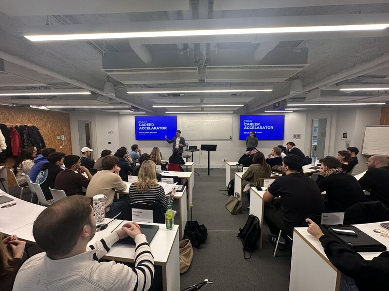

Jun 2026
Runner-Up, AstraZeneca Tech Impact Lab
Our team placed second at IE Business School with SEIL, an AI-native engagement platform for healthcare.
View on LinkedInAnalytical, solution-driven and motivated by continuous improvement. I'm an operations & strategy professional who uses data to make better decisions, with experience in the public and private sectors, most recently as Strategic Data Advisor at the OECD, alongside a Master in Management at IE Business School.
I'm passionate about data, strategy and processes, and interested in ESG and sustainability. What I enjoy most is moving projects forward as a team and creating real impact.
Built the data governance foundation for AI-ready reporting, and turned KPIs into executive stories for the CFO's office.
Reengineered and audited processes across the Americas, and turned analysis into a regional procurement renegotiation.

Our team placed second at IE Business School with SEIL, an AI-native engagement platform for healthcare.
View on LinkedIn
Recognised with the Blue Torch distinction in the Master in Management at IE Business School, Madrid.
View on LinkedIn
IE's Talent & Career team launched the Career Accelerator with the January intake, a programme I support as Class Career Rep.
View on LinkedInOpen to roles in Strategy & Operations and data analytics, designing the best operational strategy and backing every decision with data. Based in Madrid, with an EU work permit.